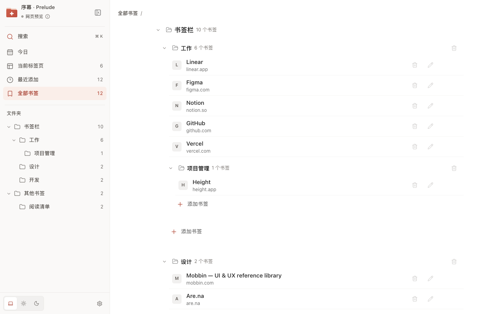

书签，还是熟悉的样子
保留 Chrome 原有文件夹，在新标签页里直接新增、编辑和拖动整理。「今日」汇集置顶、待读与收藏，「最近添加」帮你找回刚存下的内容。
 序幕 · Prelude
序幕 · Prelude
Prelude for Chrome
一个安静的新标签页，用来整理 Chrome 书签、当前标签页和待读内容。

保留 Chrome 原有文件夹，在新标签页里直接新增、编辑和拖动整理。「今日」汇集置顶、待读与收藏，「最近添加」帮你找回刚存下的内容。
集中查看打开的标签页，切换到想看的页面，关闭已处理的内容，也可以拖动排序或移到其他窗口。
从工具栏或右键菜单保存当前页面、整个窗口或标签组。保留标签顺序，检查重复网址，还可以在成功保存后关闭原标签页。
在同一个搜索框里查找书签与标签页。网址直接打开，网页搜索交给 Chrome 默认搜索引擎，继续用你习惯的方式。
无需注册，没有广告和分析工具。书签与标签页数据在本机处理；书签保存在 Chrome 中，并遵循你的 Chrome 同步设置。只有你主动提交的网页搜索会交给默认搜索引擎。
支持浅色、深色和跟随系统主题，以及简体中文、English、日本語、Español、Français 和 Русский。